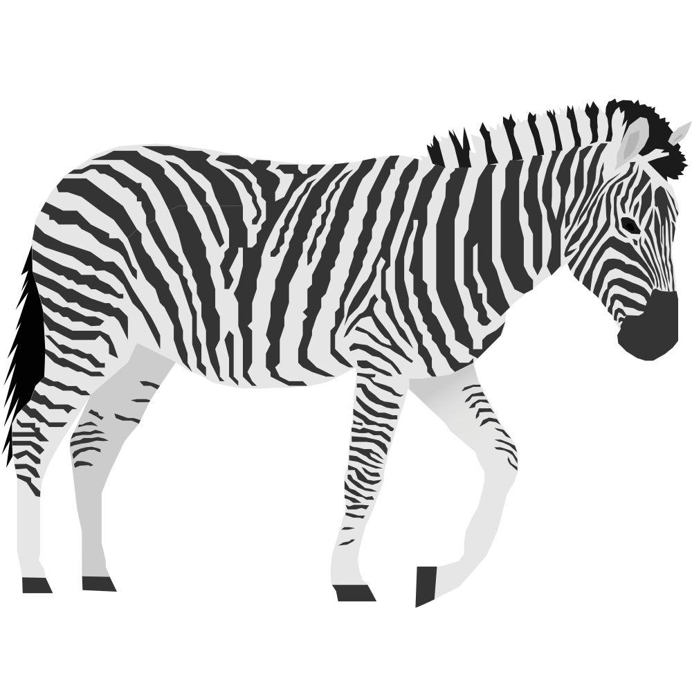
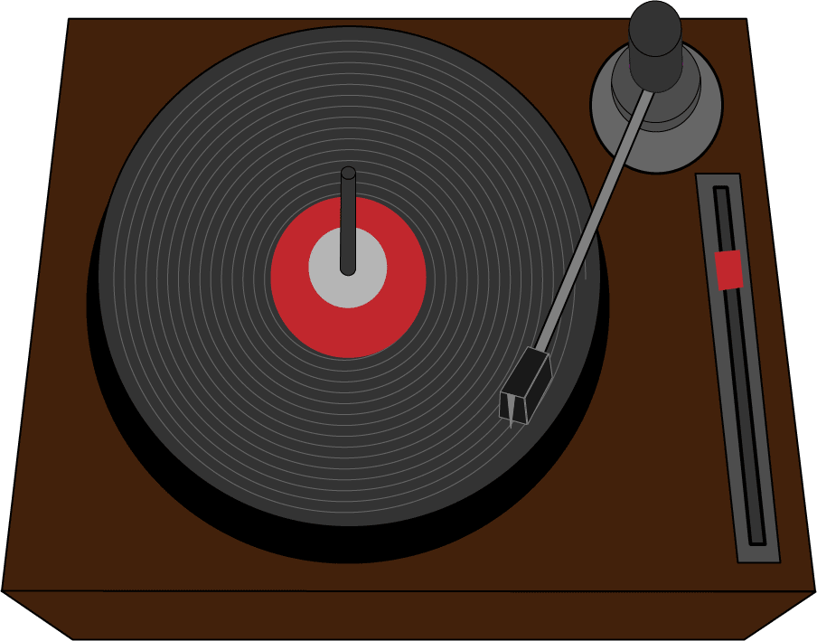
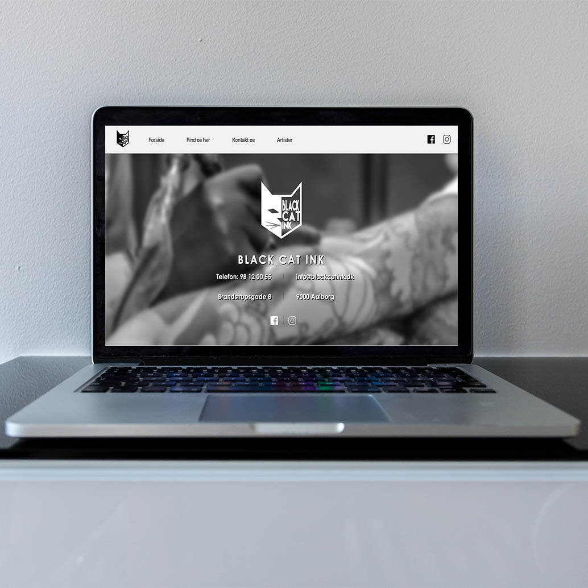
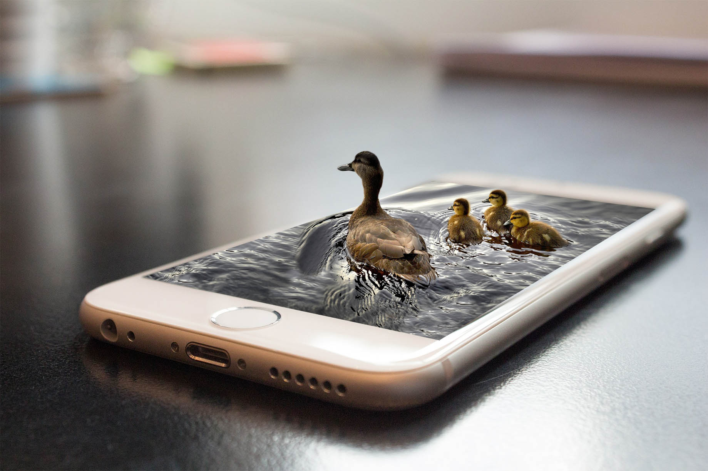
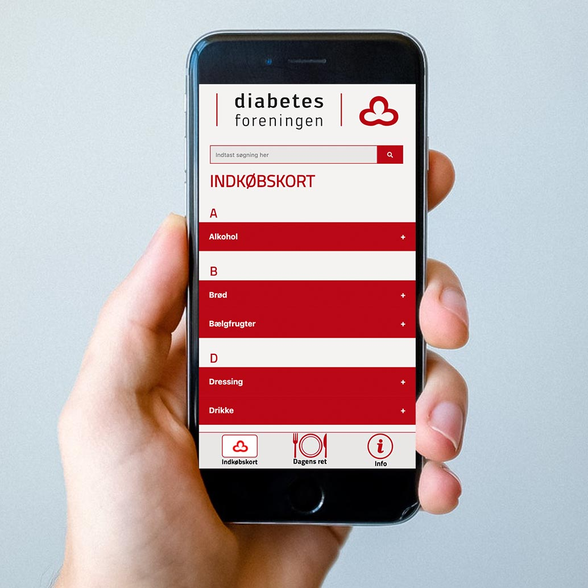
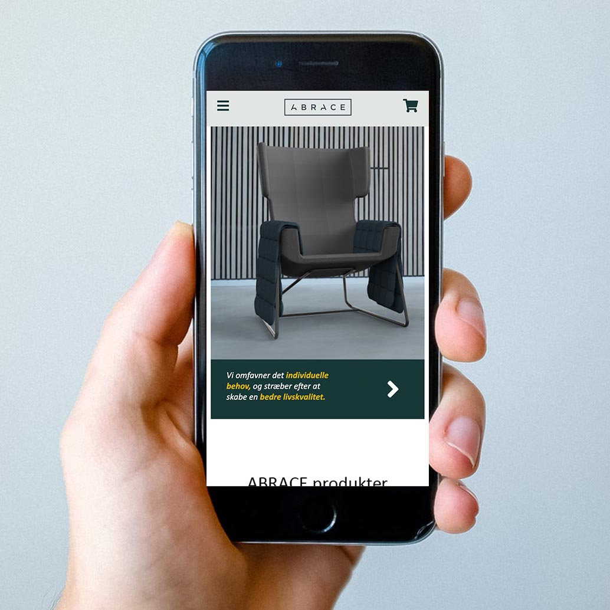
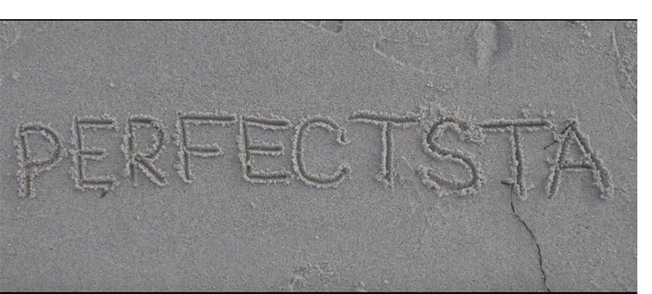
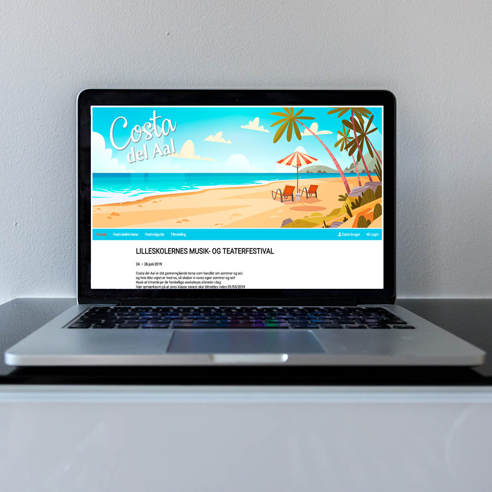
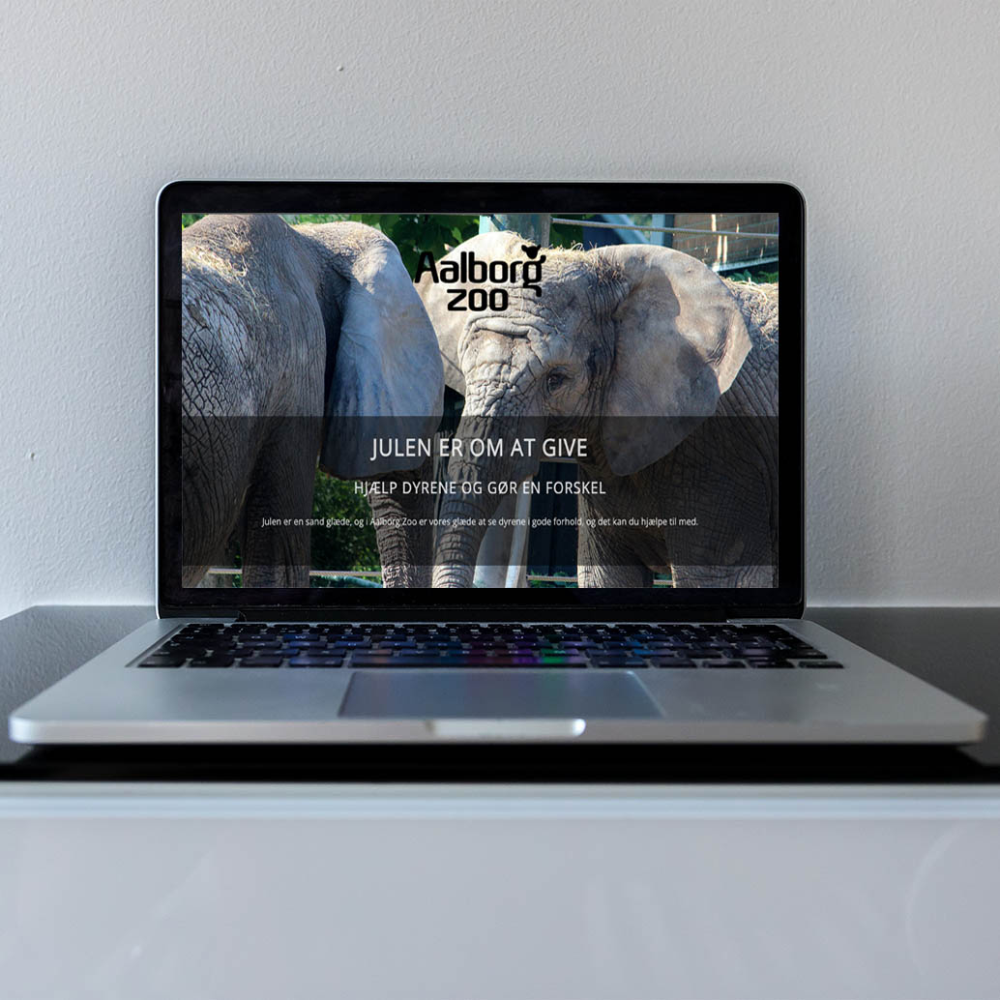

Multimedieprojekter
Gennem uddannelsen til multimediedesigner har jeg arbejdet med adskillige projektopgaver.
Størstedelen af disse projekter er udarbejdet, i samarbejde med diverse medstuderende,
i forbindelse med udannelsen til multimediedesigner.
Nedenfor fremgår der projekter, jeg har fremstillet i samarbejde med andre,
samt projekter jeg har udarbejdet på egen hånd.








